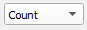
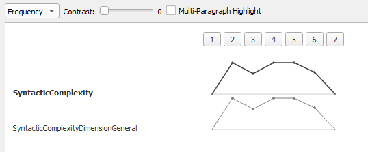

Change Graphing Options In the Temporal View, change the method used to graph results. See Graphing Options for a breakdown of options. Change the graph with the Graph Options Open the Graph Options drop down menu  Select either Count Frequency Log Scale Binary  Related tasksFilter Clusters